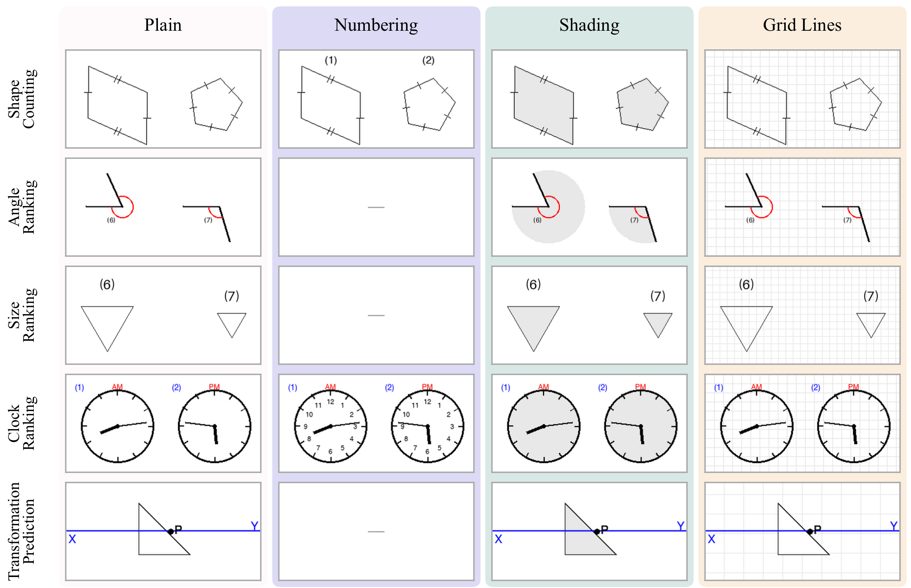
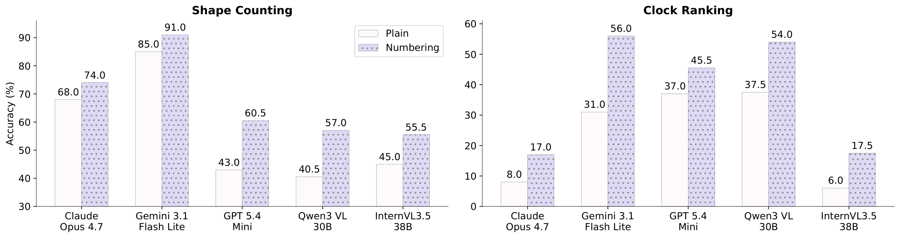
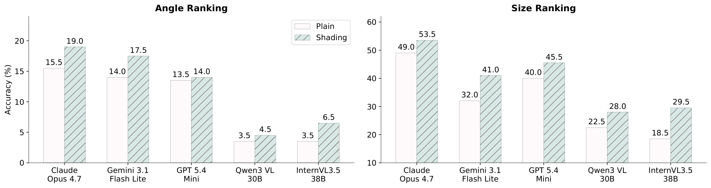
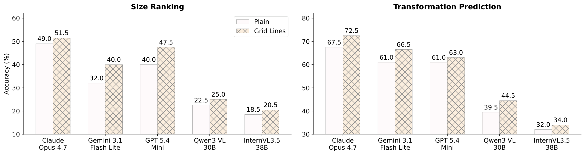
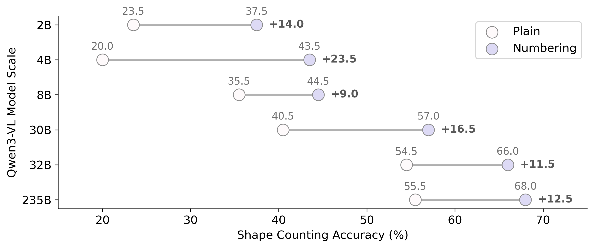

Explore the Benchmark
Pick a task, then toggle the reference. The underlying scene never changes.
Q:
Answer:
Multimodal large language models can recognize visual content yet struggle to reason reliably over it across multiple steps. In counting, a model may see all objects but lose track of which ones it has counted. We argue that such failures, commonly attributed to perception, reveal a reference gap: the failure to bind language to the relevant visual entities, regions, or locations. Motivated by the theory of visual routines, we test whether external references such as numbering can narrow this gap. We introduce ReGap-Bench, a paired benchmark of five visual reasoning tasks in which the scene, question, and answer are fixed and only the reference varies. Results show that task-matched references improve accuracy by up to 25%, while mismatched references provide little benefit or even hurt performance. These findings identify the reference gap as a bottleneck distinct from visual perception and show that constructing task-appropriate visual references can serve as a training-free visual skill for improving multimodal reasoning.
Following Ullman's theory of visual routines, we propose three references that externalize intermediate visual states. Our hypothesis: a reference helps most when it matches the visual routines the task needs.
indexing & marking
Turns description-dependent elements into addressable entities: “shape 7” instead of “the upper-left triangle”.
bounded activation
Makes a region explicit: shading an angle's interior makes the angular region itself visible.
focus shifts & boundary tracing
Provides a common frame for position, width, height, displacement and alignment.
ReGap-Bench applies a paired reference intervention to five tasks. Each scene is rendered under a plain condition and one or more reference conditions.

Pick a task, then toggle the reference. The underlying scene never changes.
Q:
Answer:

Numbering improves performance on shape counting and clock ranking.

Shading improves angle ranking and size ranking.

Grid lines improve size ranking and transformation prediction.
Mean accuracy change on shape counting, by reference:
Mismatched scaffolds are neutral or harmful.
Mean clock-ranking accuracy vs. number of dial numerals shown:
The trend is non-decreasing for every model.

Scaling model size helps both plain and numbering, but does not eliminate the reference gap.
We package the three references as a visual skill for agents: written rules map each visual operation to a reference, before/after example images show how to draw it, and a script overlays it on a copy of the image.
On 100 stratified tasks from CartoMapQA (OpenStreetMap renderings), a Codex GPT-5.5 agent draws an overlay on 57 tasks, choosing numbering for counting and route navigation, grids for route length, shading for region isolation, and no overlay for symbol recognition — improving every overlay category without any training.
| Overlay | Tasks | No skill | With skill | Δ |
|---|---|---|---|---|
| None | 43 | 86.0 | 86.0 | 0.0 |
| Numbering | 41 | 63.7 | 70.1 | +6.4 |
| Grid lines | 13 | 92.5 | 96.7 | +4.2 |
| Shading | 3 | 33.3 | 66.7 | +33.3 |
@misc{chen2026diagnosingreferencegapvisual,
title={Diagnosing the Reference Gap: What Visual Scaffolds Can and Cannot Fix in Multimodal Reasoning},
author={Guizhen Chen and Weiwen Xu and Wotao Yin and Anh Tuan Luu and Hou Pong Chan},
year={2026},
eprint={2610.39419},
archivePrefix={arXiv},
primaryClass={cs.CV},
url={https://arxiv.org/abs/2610.39419},
}